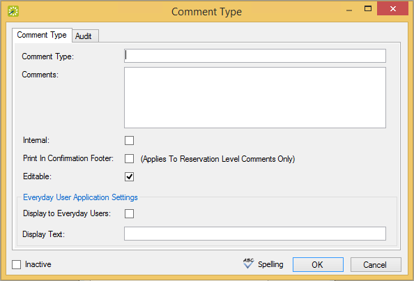

Comment Types Window
A comment is a text entry that explains or clarifies a reservation, a booking, a group, or a booking detail that is a service order. You can configure comment types, which you use to classify or categorize the different comments that are applicable for your organization’s business needs. For example, if your organization’s facilities are regularly scheduled for outside conferences, then applicable comment types could include Event Directions, Admission Cost and Requirements, Event Recap, and so on.
To configure comment types, follow these steps:
Comment Types Window
Optionally, to view all comment types in your EMS database, regardless of status, under Show, click Inactive.

Comment Type Dialog
|
Field |
Description |
|---|---|
|
Comment Type |
The name or classification for the comment type. The comment type can be a maximum of 30 characters, including spaces. |
|
Comments |
Free form text that is appropriate for the selected comment type. The information that you enter here is displayed by default when you apply the comment, but you can always edit it or delete it if needed. |
|
Internal |
Indicates that the comment type is internal to your organization. Used for internal reporting purposes only. The comment type is not printed on external documents such as confirmations and invoices, and it is not hidden in any area of your EMS application. |
|
Print in Confirmation Footer |
Select this option if the comment type is to be printed in the footer of reservation-level confirmations. |
|
|
|
|
Display to Everyday Users |
Select this option if the comment is to be displayed in EMS Web App when it is attached to a reservation or booking. |
|
Display Text |
Provides an expanded description of the comment type in EMS Web App when users are browsing events. |
|
Inactive |
Leave this option blank to add the comment type as an active comment type. Select this option to inactivate the comment type. |